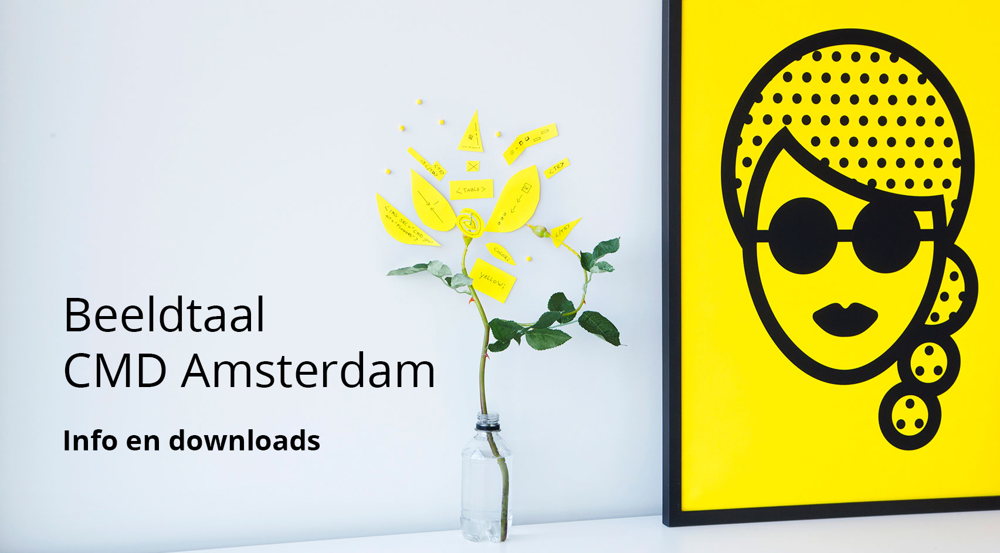
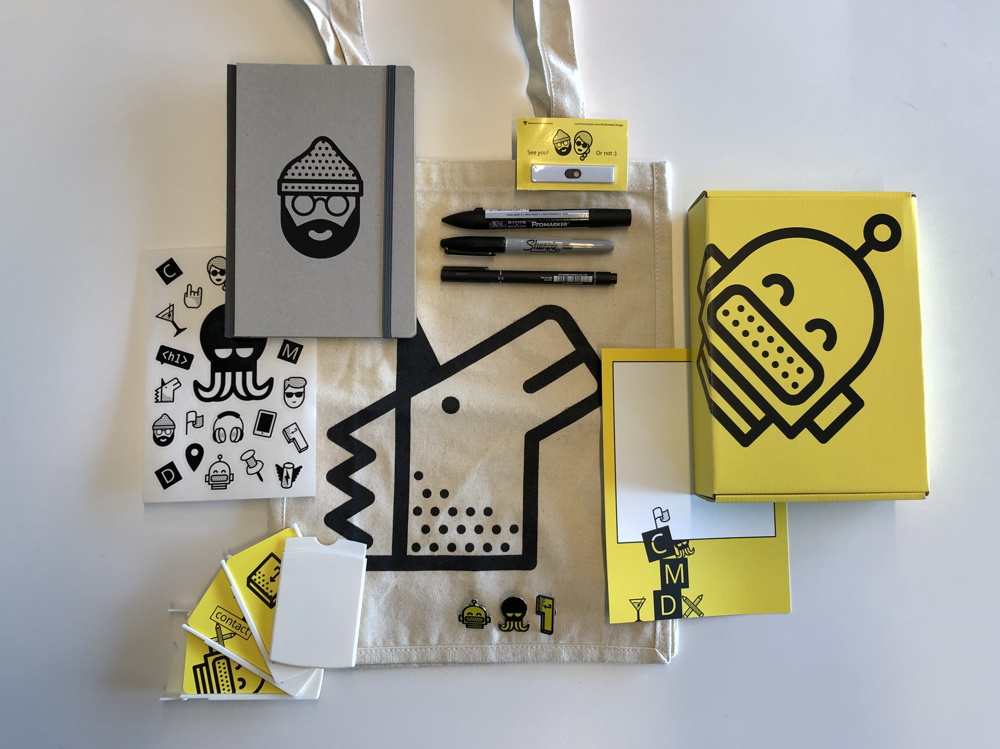

Beeldtaal
Manual CMD Amsterdam beeldtaal
Wees vooral vaak eigenwijs, alleen nu even niet en lees de korte manual even. Er staan nuttige zaken in :)
Iconen
De iconen vormen het hart van de beeldtaal. Je vindt hieronder vier downloads, in zowel Adobe Illustrator als PNG bestanden. De PNG-bestanden werken vaak beter voor klein formaat en/of online toepassingen. De Illustrator-bestanden zijn handig voor o.a. groot formaat (bijvoorbeeld print en/of motion-graphic toepassingen).
- Drie losse C M D iconen (Adobe Illustrator)
- Overzicht alle iconen (Adobe Illustrator - transparant + witte achtergrond)
- Overzicht alle iconen (Adobe Illustrator - transparant + gele achtergrond)
- Overzicht alle iconen (als losse PNG files)
Templates Keynote en Powerpoint
Er is een tweetal templates voor Keynote en Powerpoint beschikbaar via onderstaande downloads. In de templates staat een korte toelichting over het gebruik en je vindt in de templates ook als laatste een slide met alle iconen. Die kun je bijvoorbeeld hier en daar in je presentatie gebruiken. En dan deze laatste slide uiteindelijk verwijderen / op hide zetten. Oh, en je hoeft dus echt niet alle slides een gele achtegrond te geven. Dat is wel wat overdreven. Maak er wat moois van!
Foto's
Door fotografe Daantje Bons is een 50-tal foto's gemaakt (met CMD-studenten in de hoofdrol). Deze kun je gebruiken voor bijvoorbeeld je presentaties (gebruik dan de lage resolutie foto's), studentenwerk, posters (gebruik dan de hoge resolutie), etc. De medium-resolutie foto's zijn ook naar 1920 x 1080 pixels formaat aangepast.
- Foto's lage resolutie (voor bijvoorbeeld web)
- Foto's CMD beeldtaal (medium resolutie en 1920 x 1080 px)
- Foto's hoge resolutie (o.a. print)
GIF-jes
Van een aantal iconen hebben we een bewegende animatie gemaakt (GIF). Veel plezier ermee!
Bumpertjes (voor video)
Er zijn twee zogeheten 'bumpertjes' gemaakt die je kunt gebruik aan het begin of aan het eind (of beide) van je zelf gemaakte video's. Hieronder vind je een Nederlandstalige en een Engelstalige bumper.
Email-handtekening
Je kunt gebruik maken van deze geanimeerde CMD Amsterdam handtekening in je email. Het is zodanig ontworpen dat mailprogramma's dit niet als bijlage zien (wat je wel vaak ziet). Als je op de link klikt kom je direct in het format. Dit kun je dan kopiëren naar je eigen mailprogramma en aanpassen met je eigen gegevens.
Kadobox en overige spulletjes
Er is een aantal CMD 'spulletjes' beschikbaar die voor bijzondere gelegenheden en/of personen (bijvoorbeeld gastsprekers, mooi studentenwerk, etc.) gebruikt kunnen worden. Deze kunnen afzonderlijk van elkaar worden gegeven, of gebundeld in de one-and-only CMD Kadobox. De spulletjes bestaan uit:
- Goody bag (met unicorn)
- Schetsboekje (met zes verschillende designs op de voorkant)
- Stickervel met CMD iconen
- Stiften / pennen (Sharpie, Pro-Marker en Fine-liner)
- Speldjes (Octopus, Enter en Robot)
- Clippie (privacy sticker met open/dicht schuifje voor op bijvoorbeeld laptop)
- Visitekaartjes
- Compliment Card (om met persoonlijke tekst boven in de kadobox te leggen)
Bestellen en/of meer informatie hier over bij Mattijs Blekemolen. Zie contactgegevens onderaan deze pagina. 
Video CMD Amsterdam beeldtaal
Twee docenten van onze opleiding (Maaike van Cruchten en Bart-Jan Steerenberg) hebben i.s.m. Mattijs Blekemolen een filmpje over de beeldtaal (visual identity) van CMD Amsterdam gemaakt. Opnieuw natuurlijk onze studenten in de hoofdrol :)
Vragen, ideeën of opmerkingen?
De ontworpen elementen van de CMD beeldtaal zijn geen 'eindpunt'. We staan altijd open voor jouw idee! Moet er een icoon bij? Ben je handig met een lasercutter? Wil je losgaan met een 3D printer? Vind je het leuk om animaties te maken met elementen van de beeldtaal? Laat het ons weten! Stuur een mailtje naar Mattijs Blekemolen om je idee te bespreken.
Mattijs Blekemolen | email